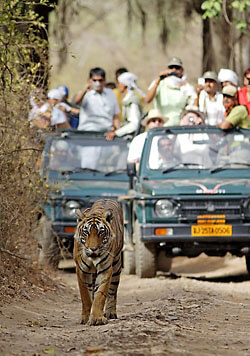

Responsible Eco tourism

Eco tourism (also known as ecological tourism) is travel to fragile, pristine and usually protected areas that strive to be of low impact and (often) small scale. It helps educate the traveler; provides funds for conservation; directly benefits the economic development and political empowerment of local communities and fosters respect for different cultures and for human rights.
Eco tourism is not only a good sounding word but also carries a deeper meaning. When it comes to wildlife, beauty and nature comes to the mind at once. It becomes the moral responsibility of all nature lovers esp. those visiting the ecological jungle to promote security, growth and beauty of the region.
It is also concerned with promoting the economies of the nearby regions of the national parks and sanctuaries. All the nearby populations who survive on the economy from the natural habitats are to be paid special care and attention by the government authorities and also by the tourists coming from diverse global locations.
Eco-tourism focuses on local cultures, wilderness adventures, volunteering, personal growth and learning new ways to live on our vulnerable planet. It is typically defined as travel to destinations where the flora, fauna and cultural heritage are the primary attractions. Responsible Eco-tourism includes programs that minimize the adverse effects of traditional tourism on the natural environment, and enhance the cultural integrity of local people. Therefore, in addition to evaluating environmental and cultural factors, initiatives by hospitality providers to promote recycling, energy efficiency, water re-use, and the creation of economic opportunities for local communities are an integral part of Eco-tourism.
How can we promote Eco tourism by Minimizing impact
- Build environmental and cultural awareness and respect
- Provide positive experiences for both visitors and hosts
- Provide direct financial benefits for conservation
- Provide financial benefits and empowerment for local people
- Raise sensitivity to host countries' political, environmental and social climate Support
- international human rights and labour agreements
The Basic DO’s and DONT’s for Eco Tourism:
DO'S
- Carry back all non-degradable litter such as empty bottles, tins, plastic bags etc. These must not litter the environment or be buried. They must be disposed in municipal dustbins only.
- Observe the sanctity of holy sites, temples and local cultures.
- Cut noise pollution. Do not blare aloud radios, tape recorders or other electronic entertainment equipment in nature resorts, sanctuaries and wildlife parks.
- In case temporary toilets are set-up near campsites, after defecation, cover with mud or sand. Make sure that the spot is at least 30 meters away from the water source.
- Respect people's privacy while taking photographs. Ask for prior permission before taking a photograph.
DON'TS
- Do not take away flora and fauna in the forms of cuttings, seeds or roots. It is illegal, especially in the Himalayas. The environment is really delicate in this region and the bio-diversity of the region has to be protected at all costs.
- Do not use pollutants such as detergent, in streams or springs while washing and bathing.
- Do not use wood as fuel to cook food at the campsite.
- Do not leave cigarette butts or make open fires in the forests.
- Do not consume aerated drinks, alcohol, drugs or any other intoxicants and throw bottles in the wild.
- Do not tempt the locals, especially children by offering them foodstuff or sweets. Respect local traditions.
- Polythene and plastics are non biodegradable and unhealthy for the environment and must not be used and littered.
Golden Rules When You Travel
- Learn about your destination before you get there. Read guidebooks, travel articles, histories and/or novels by local authors and pay particular attention to customs such as greetings, appropriate dress, eating behaviors, etc. Being sensitive to these customs will increase local acceptance of you as a tourist and enrich your trip.
- Follow established guidelines. Ask your eco-tour operator, guide and/or the local authorities what their guidelines are for limiting tourism's impact on the environment and local culture. Staying on trails, packing up your trash, and remaining set distances away from wildlife are a few ways to minimizing your impact in sensitive areas.
- Seek out and support locally owned businesses. Support local businesses during your eco-travels to ensure maximum community and conservation benefit from your spending.